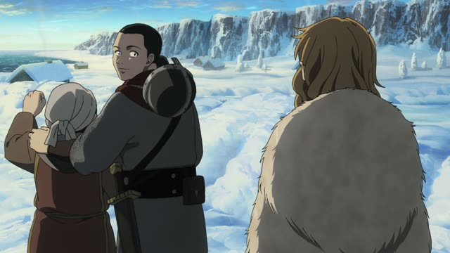
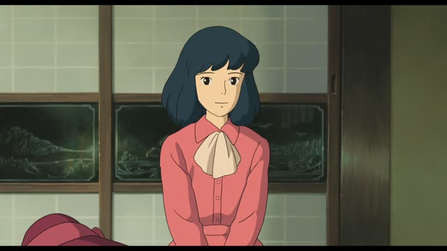
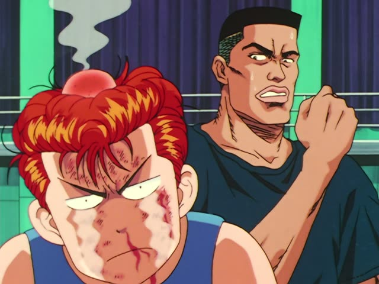
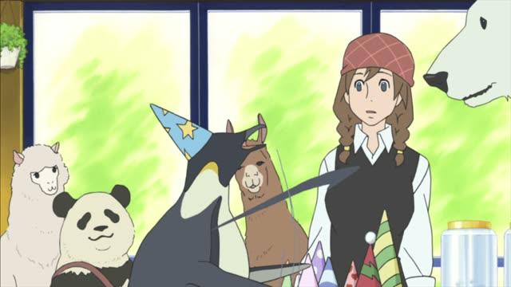
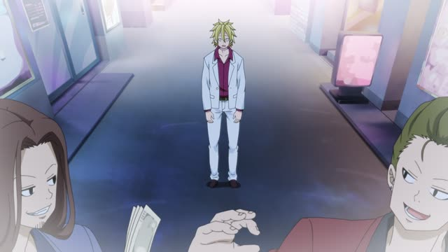
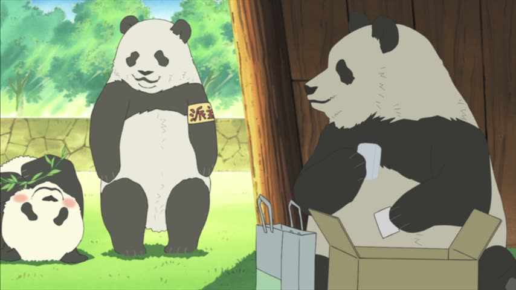

～てから
Death Note · Episode 16
さっきトイレに行ってから４分しか経っていません。
"It's only been four minutes since I went to the bathroom."
てから after a verb means after doing it: first one thing, then the rest.
It goes on the て-form: 行く → 行って + から. On this card, it answers "since when?": since the bathroom trip, just four minutes.
The politeness sits at the end of the sentence, not on てから. Plain ～て only says "and"; てから makes the order clear.

Vinland Saga · Episode 3
続きは 帰ってから話すよ。
"I'll tell you the rest after I get home."
てから means "after". On this card, 帰る ("get home") → 帰って + から = "after getting home": first get home, then talk.
Quick Examples
Your friend wants to go out right now.
宿題をしてから行くね。
"I'll go after I do my homework."
する → して.
CasualAt the table, a kid grabs the food.
手を洗ってから食べてください。
"Please wash your hands before you eat."
Literally "after washing your hands, eat".
PoliteSomeone asks how long you've been in Japan.
日本に来てから、三年です。
"It's been three years since I came to Japan."
来る → 来て.
PolitePlanning the evening with a friend.
ご飯を食べてから、映画を見よう。
"Let's watch a movie after we eat."
食べる → 食べて.
CasualWith and without
ご飯を食べて、映画を見ます。
"I eat and watch a movie." Just two things in a row.
ご飯を食べてから、映画を見ます。
"I watch a movie after I eat." The eating comes first, for sure.
Examples from Media

The Wind Rises
戻ってから片づけますから。
"I'll tidy up after I get back."
戻って + から: after coming back.
Kekkon Dekinai Otoko · Episode 10
仲直りしてから来いよ。
"Make up first, then come."
仲直りして + から: after making up.

Slam Dunk · Episode 26
殴ってから言うなよ。
"Don't say that after you've already hit me."
殴って + から: after hitting.
Teasing Master Takagi-san · Season 2, Episode 8
まあ 引いてから考えるか。
"Well, I'll think about it after I draw."
引いて + から: first draw (a lottery ticket), then think.

Shirokuma Cafe · Episode 37
お店終わってからでいいから。
"After you close the shop is fine."
終わって + から + でいい: "after it's over is fine".

Kotaro Lives Alone · Episode 9
施設を出てからさ。
"Since I left the home..."
出て + から: since leaving.

Shirokuma Cafe · Episode 26
ご飯食べてからにするよ。
"I'll do it after I eat."
Eat first, then the other thing.
Goblin Slayer · Episode 9
ヤツらを引きつけてから仕留めろ。
"Draw them in, then finish them off."
引きつけて + から: first draw them close.
Further Reading
A Dictionary of Basic Japanese Grammar
Entry "kara²" (after) · pp. 177–178